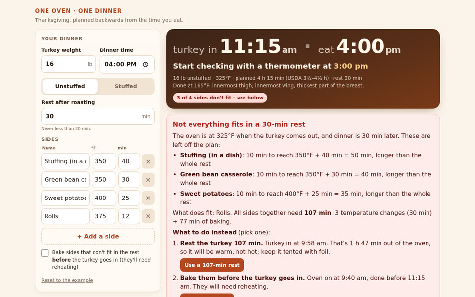
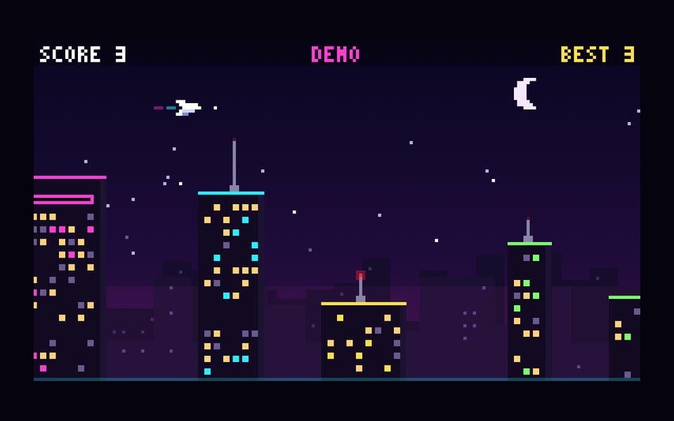
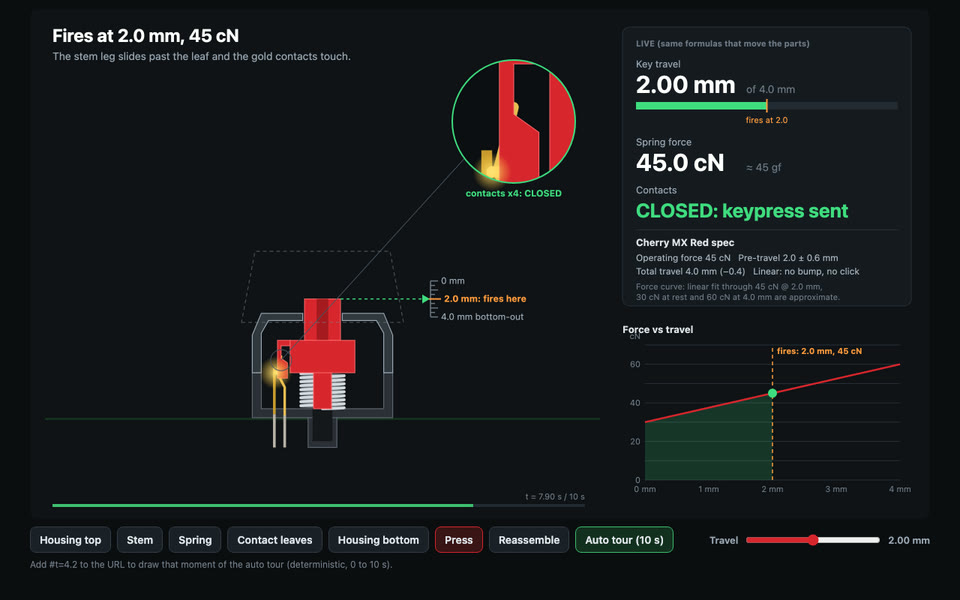
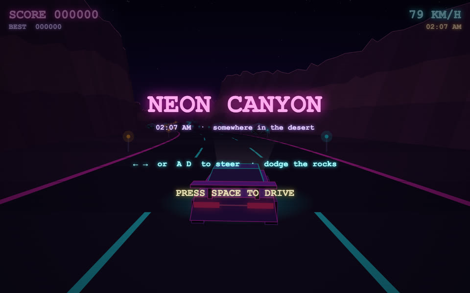

Ava Blue · things I asked Claude to build
Every page here was written by Claude in one go from a single ask. I don't fix its files; when something broke, the fixed copy is labelled. The prompt is under each one.

One oven, one Thanksgiving dinner, planned backwards
2026-11-25 · Claude Opus 5.5
Type the turkey's weight, your dinner time and your sides, and it schedules one oven backwards from dinner, with turkey times from USDA's roasting chart. My catch: its bake-first option never tells you to refrigerate the sides it sets aside. The safe limit at room temperature is 2 hours, so fridge anything you bake early. Always check the turkey with a thermometer.
Claude's build (untouched)
The prompt
Make me a single index.html (no libraries, no external files, works offline on a phone) that plans Thanksgiving dinner in ONE oven, backwards from the time we eat.
Inputs: turkey weight in lb, stuffed or not, dinner time, how long the turkey rests (default 30 min, never less than 20), and a list of sides, each with a name, oven temperature in °F and minutes (editable, add and remove). Prefill: a 16 lb unstuffed turkey, dinner at 4:00 pm, and these sides: stuffing (in a dish) 350°F 40 min, green bean casserole 350°F 30 min, sweet potatoes 400°F 25 min, rolls 375°F 12 min.
The turkey roasts at 325°F. Take its time from this USDA table, and plan from the long end of the range so it's never early:
Weight (lb) | Unstuffed (hours) | Stuffed (hours)
4 – 8 (breast) | 1½ – 3¼ | –
6 – 8 (breast) | – | 2½ – 3½
8 – 12 | 2¾ – 3 | 3 – 3½
12 – 14 | 3 – 3¾ | 3½ – 4
14 – 18 | 3¾ – 4¼ | 4 – 4¼
18 – 20 | 4¼ – 4½ | 4¼ – 4¾
20 – 24 | 4½ – 5 | 4¾ – 5¼
It's done when the innermost thigh and wing and the thickest part of the breast reach 165°F on a food thermometer.
Rules: the oven holds one temperature at a time, and changing temperature takes 10 minutes. Fit the sides into the turkey's rest if they can. If they don't fit, say plainly what to do instead. Never pretend it fits.
Show: a big readout "turkey in HH:MM · eat HH:MM", a line "start checking with a thermometer at HH:MM" (the short end of the range), a timeline of the oven, and a step-by-step list with clock times. Make it look good and easy to read on a phone.
Also read #t=<seconds> from the URL and draw that moment of a ~10 s demo tour where the timeline fills in, deterministic for a given t, so I can record it.

Photo of handwritten letters → a .ttf you can type with
2026-11-23 · Claude Opus 5.5
Pick a photo of a to z written in rows and it traces each letter into a real font file, in the browser, no libraries. The version with one extra sentence about ruled lines read 7 of my 9 test sheets; the original only works on plain paper.
with the ruled-lines sentence (untouched) · the original ask (untouched)
The prompt
Make me a single index.html that turns a photo of my hand-drawn letters into a font I can actually type with. I pick the photo with a file input. The sheet has the lowercase letters a to z in order, in rows. Find each letter, trace its outline, and build a real .ttf font file in the browser, with no libraries or CDNs. Then load that font into the page, show a text box that types in it, and add a button to download the .ttf. The paper may be lined, with ruled or margin lines, so ignore printed lines and only trace the ink of the letters.
The post on X →

Six Claudes, one game: three looked at their frames first
2026-11-20 · Claude Opus 5.5 (six fresh sessions)
A pixel-art paper plane over a neon city. Three sessions wrote it blind; three could render the game and look at the frames before finishing (one extra paragraph in the ask). Same bug count, but only the ones that looked made demos that crash and restart.
Looked 1 · Looked 2 · Looked 3 · Blind 1 · Blind 2 · Blind 3
The prompt
Make me a tiny pixel-art game in a single index.html, no libraries and no external files: a paper plane flies through a neon city at night, you tap or press space to climb, and you dodge the rooftops and antennas. Show a score, and restart after a crash. Also add a demo mode: when the URL has #t=<seconds>, a simple autopilot plays and the page draws exactly that moment of the demo (seeded random, no clock), so I can record it frame by frame.
Before you finish, look at your game: render frames of the demo with `python3 -I tools/screenshot.py <your index.html> <out.png> --hash t=<seconds>` at a few different moments, open the PNGs and look at them, and fix anything that looks wrong.

Cherry MX Red teardown
2026-11-17 · Claude Opus 5.5
An interactive teardown of a mechanical keyboard switch: press it, watch it fire at 2 mm of its 4, then take it apart part by part.
Claude's build (untouched)
The prompt
Build me an interactive teardown of a Cherry MX Red mechanical keyboard switch as a single index.html with no libraries or external files (canvas 2D or SVG). It should open up step by step: one button per part (housing top, stem, spring, contact leaves, housing bottom) that pulls that part out and labels it, plus a "press" view that pushes the key down and shows exactly where it fires. Use the real Cherry MX Red numbers, and put them in a panel that updates live from the same formulas that move the parts (key travel in mm, spring force, and whether the contacts are open or closed). Add an auto tour that walks through all of it in about 10 seconds. Read #t=<seconds> from the URL and draw that moment of the auto tour, deterministic (no wall clock, no randomness), so I can record it frame by frame.
The post on X →

Same prompt, three Claudes: photo → 1-bit print
2026-11-15 · Claude Haiku 5.5, Sonnet 5.5 and Opus 5.5
Upload any photo and get a dithered black-and-white print. Same ask to three models; Haiku's needed 5 more words ("drawn with 2 px dots").
Haiku 5.5 · Sonnet 5.5 · Opus 5.5 · Haiku 5.5 + "drawn with 2 px dots"
The prompt
make me a single index.html with no libraries or external files that turns any photo i upload into a 1-bit dithered print, with a choice of dither styles, a contrast slider, and a button to download the result as a png.
The post on X →

One-sentence 3D racer
2026-11-14 · Claude Opus 5.5
A neon car in a desert canyon at 2am, all 3D math by hand on a 2D canvas. It painted the road over its own car; deleting one line fixed it.
Claude's first try (untouched) · with the one-line fix
The prompt
make me a playable 3D endless runner as a single index.html with no libraries or external files: i'm driving a neon car through a desert canyon at 2am, steer with the arrow keys or A/D, dodge the rocks, show the score, and restart on space after a crash.
The post on X →